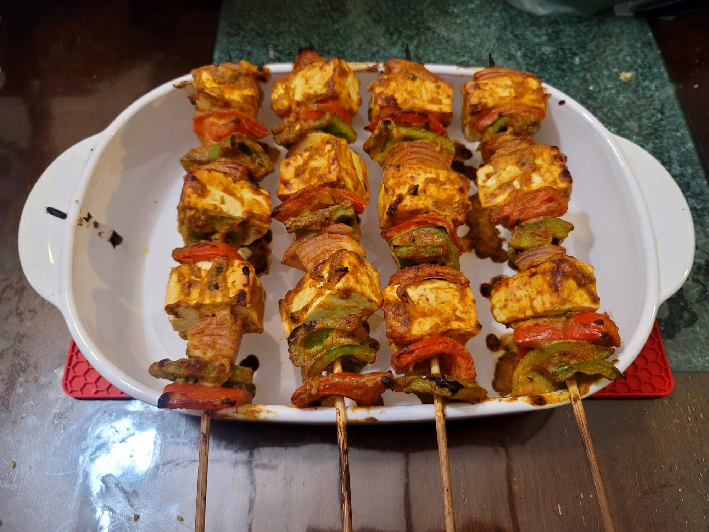

Paneer Tikka

Ingredients:
- 10-12 oz Paneer, cut into 12 cubes
- 1 1/2 tbsp Mustard oil
- 1 tbsp Besan or Chickpea flour
- 6 tbsp Greek yogurt
- 1 1/4 Ginger-garlic paste, or half grated ginger + half grated garlic
- 1 - 1 1/2 tsp Kashmiri chili powder
- 1 - 1 1/2 tsp Coriander
- 1 tsp Garam masala
- 1 tsp Chaat masala
- 1 tsp Kasuri methi
- 1/4 tsp Turmeric
- 1/2 - 3/4 tsp Salt
- 1 Red onion, cubed
- 1 Red bell pepper, cubed
- 1 Green bell pepper, cubed
- 1/4 - 1/2 tsp Ajwain seeds
Instructions:
- Heat the mustard oil in a pan over low heat. Add in the besan and mix until homogenous. Cook until fragrant and then remove from heat.
- Transfer the mustard oil and besan to a large mixing bowl with the yogurt, chili powder, garam masala, turmeric, coriander powder, kasuri methi, chaat masala, ginger-garlic paste, and salt. Mix to create a marinade. Taste and add salt or chili powder as needed.
- Add the paneer, onion, bell peppers, and ajwain seeds to the marinade and toss to combine. Let marinate in the fridge for at least 30 minutes.
- Preheat an oven to 450 degrees Fahrenheit.
- Add the contents to skewers in the order of green bell pepper, red bell pepper, paneer, onion, and repeat. Make 4 skewers. Place on walls of a baking dish so that they are elevated and not touching the bottom. Spray with a light coat of oil and bake for 10-11 minutes. Then brush with some leftover marinade and let broil for 2-3 more minutes.
- Remove from the oven and serve immediately.